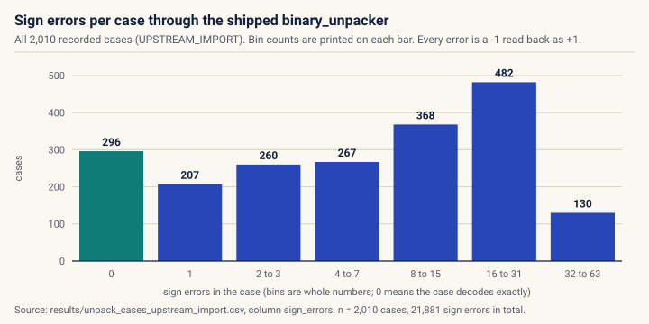
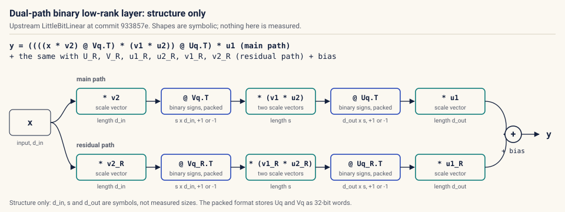
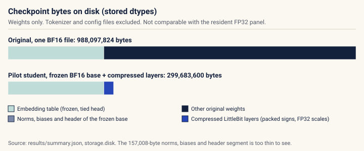
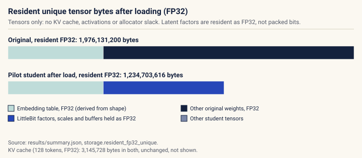
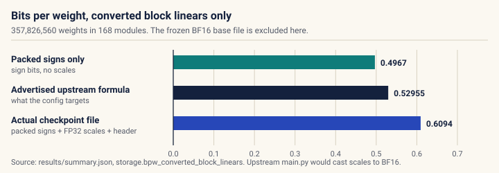
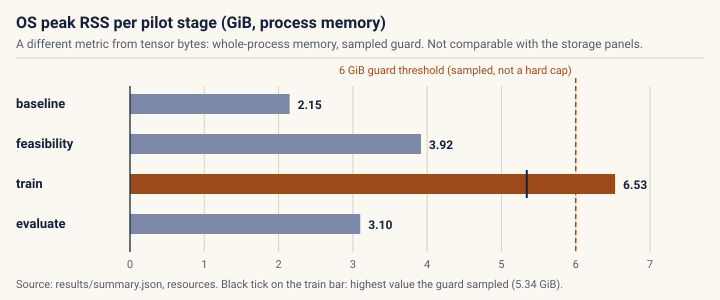
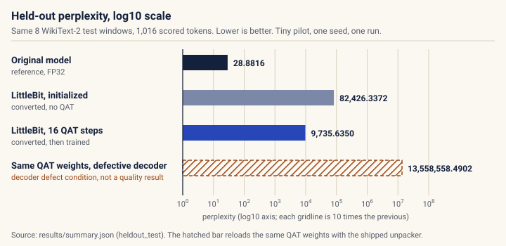
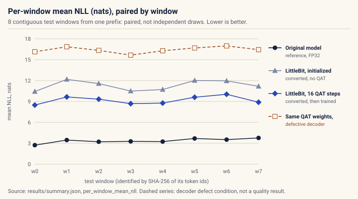
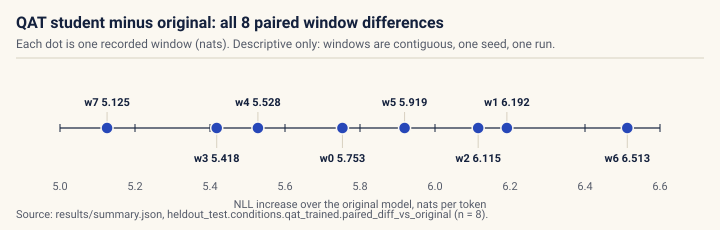

Companion v0.2.0 · measured data from release v0.1.0, commit 97f075c
Packed signs that do not come back: a deployment audit of LittleBit
The shipped unpacker in SamsungLabs/LittleBit (commit 933857e) reads a -1 sign back correctly only at bit 0 of each 32-bit word. This page shows the recorded evidence, the one-line fix, how storage should be counted, and a tiny real-model pilot whose quality result is negative.
Download the manuscript (PDF, 7 pages, release v0.2.0)
- Recorded unpack cases decoded exactly by the shipped unpacker
- 296 of 2,010
- Signs flipped from -1 to +1 across those cases
- 21,881
- Cases exact after the one-line patch
- 2,010 of 2,010
- Pilot perplexity after 16 QAT steps, original 28.8816
- 9,735.6350
1
The shipped unpacker drops most -1 signs
The packer stores one sign per bit, least significant bit first: column j of a row is bit j % 32 of word j // 32, and a set bit means -1. The upstream unpacker then reads bit k with a left shift:
bits = (word_data.unsqueeze(1) << torch.arange(32, device=packed_tensor.device)) & 1Only bit 0 of the shifted value is inspected, and a left shift by any k >= 1 clears bit 0. So a -1 survives only at in-word position 0. Through the actual upstream functions, 2,010 recorded cases (1,792 byte-tiled rows, 176 one-hot rows and 42 fixed patterns, at widths 1, 7, 8, 31, 32, 33 and 64) decode exactly in 296 cases; 21,881 signs come back wrong, every one of them a -1 read as +1. A corrected decoder recovers 2,010 of 2,010 from the same packed words, so the packer is correct.
Decode a recorded case yourself
Choose any of the 2,010 recorded cases. Your browser decodes the recorded packed words twice, with the shipped expression and with the fixed one, and compares its count of sign errors with the count recorded in the CSV. Nothing here is simulated: the packed words and recorded counts come from results/unpack_cases_upstream_import.csv.
Loading the recorded cases.
0x80000000 are negative; the explorer uses >>> to read them as unsigned.
Bin counts as a table
| sign errors in the case | cases |
|---|---|
| 0 | 296 |
| 1 | 207 |
| 2 to 3 | 260 |
| 4 to 7 | 267 |
| 8 to 15 | 368 |
| 16 to 31 | 482 |
| 32 to 63 | 130 |
| total | 2,010 |
results/unpack_cases_upstream_import.csv.| width | cases | exact cases | byte-tiled rows exact | sign errors |
|---|---|---|---|---|
| 1 | 263 | 263 | 256 of 256 | 0 |
| 7 | 269 | 8 | 4 of 256 | 786 |
| 8 | 270 | 6 | 2 of 256 | 917 |
| 31 | 293 | 5 | 1 of 256 | 3,930 |
| 32 | 294 | 4 | 1 of 256 | 4,062 |
| 33 | 295 | 5 | 1 of 256 | 4,062 |
| 64 | 326 | 5 | 1 of 256 | 8,124 |
| all | 2,010 | 296 | 266 of 1,792 | 21,881 |
2
A one-line fix
Replacing the left shift with a right shift reads every bit. The proposed patch changes two characters on one line:
- bits = (word_data.unsqueeze(1) << torch.arange(32, device=packed_tensor.device)) & 1
+ bits = (word_data.unsqueeze(1) >> torch.arange(32, device=packed_tensor.device)) & 1Applied in memory to the unmodified upstream source, the patched unpacker decoded 2,010 of 2,010 recorded cases exactly, against 296 of 2,010 without it. The upstream checkout was not modified, the patch has not been sent upstream, and the official full-model loader was not run; full-model reloads were emulated.
3
What gets packed: the dual-path binary low-rank layer
Each converted linear layer in upstream LittleBitLinear computes, for input x:
y = ((((x * v2) @ Vq.T) * (v1 * u2)) @ Uq.T) * u1The layer output adds the same expression with the residual factors U_R, V_R and scales u1_R, u2_R, v1_R, v2_R, and then the bias. Uq and Vq are the binarized factors whose signs are packed into 32-bit words when a checkpoint is saved; u1, u2, v1 and v2 are scale vectors. The defect in section 1 corrupts Uq, Vq and their residual counterparts on reload.
Structural diagram (illustrative dimensions, not measured)

Static diagram shown. A 3D view loads when JavaScript and WebGL are available; it shows the same structure.
- Input
x, length d_in. The 3D view draws d_in = 12. x * v2: scale each input feature by the vectorv2(length d_in).@ Vq.T: multiply by the binary sign matrixVq(s by d_in, entries +1 or -1, stored packed). The 3D view draws s = 4.* (v1 * u2): scale the s latent features by the product of two scale vectors.@ Uq.T: multiply by the binary sign matrixUq(d_out by s, stored packed). The 3D view draws d_out = 10.* u1: scale each output byu1(length d_out).- Residual path: the same five operations with
U_R,V_R,u1_R,u2_R,v1_Randv2_R. - Add both path outputs and the bias to give
y.
4
Storage: disk bytes and resident bytes, kept apart
Disk and memory use different data types, so they are reported in separate panels and never summed or compared across. Tokenizer and config files (15,879,995 bytes) are excluded from every weight count. The KV cache is not a weight: for 128 tokens in FP32 it is 3,145,728 bytes for both models, unchanged by LittleBit.

Disk bytes as a table
| file part | original | pilot student |
|---|---|---|
| Embedding table (frozen, tied head) | 272,269,312 | 272,269,312 |
| Other original weights | 715,828,512 | not stored (replaced) |
| Norms, biases and header of the frozen base | inside the original file | 157,008 |
| Compressed LittleBit layers | none | 27,257,280 |
| Total weight bytes | 988,097,824 | 299,683,600 |

Resident bytes as a table
| tensor group | original | pilot student |
|---|---|---|
| Embedding table, FP32 (derived from shape) | 544,538,624 | 544,538,624 |
| Other original weights, FP32 | 1,431,592,576 | replaced |
| LittleBit factors, scales and buffers, FP32 | none | 689,878,656 |
| Other student tensors | included above | 286,336 |
| Total resident tensor bytes | 1,976,131,200 | 1,234,703,616 |
| KV cache, 128 tokens, FP32 (not weights) | 3,145,728 | 3,145,728 |

Bits per weight as a table
| measure | bits per weight |
|---|---|
| Packed signs only | 0.4967 |
| Advertised upstream formula | 0.52955 |
| Actual checkpoint file, FP32 scales | 0.6094 |

Peak RSS as a table
| stage | OS peak RSS (GiB) | highest guard sample (GiB) | above the guard threshold |
|---|---|---|---|
| baseline | 2.15 | 2.05 | no |
| feasibility | 3.92 | 3.91 | no |
| train | 6.53 | 5.34 | yes |
| evaluate | 3.10 | 2.73 | no |
5
Tiny real-model pilot: a negative result
All 168 linear layers in the transformer blocks of Qwen/Qwen2.5-0.5B were converted to upstream LittleBitLinear (eff_bit 0.55, residual path, ITQ false, seed 42), trained for 16 QAT steps on 2,048 input tokens on CPU in float32, saved packed, reloaded with a corrected decoder and scored on 8 held-out windows (1,016 tokens). Perplexity stayed about 337 times the original. Section 5 is a wiring check of the harness, not evidence about LittleBit at its published settings.

Perplexity and mean NLL as a table
| condition | perplexity | log10 perplexity | mean NLL (nats) | windows worse than original |
|---|---|---|---|---|
| Original model | 28.8816 | 1.461 | 3.3632 | reference |
| LittleBit, initialized | 82,426.3372 | 4.916 | 11.3197 | 8 of 8 |
| LittleBit, 16 QAT steps | 9,735.6350 | 3.988 | 9.1835 | 8 of 8 |
| Same QAT weights, defective decoder | 13,558,558.4902 | 7.132 | 16.4225 | 8 of 8 |

Per-window NLL as a table
| window | SHA-256 (first 12 hex) | Original model | LittleBit, initialized | LittleBit, 16 QAT steps | Same QAT weights, defective decoder |
|---|---|---|---|---|---|
| w0 | 91ae344eda8b | 2.7316 | 10.4306 | 8.4848 | 16.1380 |
| w1 | 01c8de173163 | 3.4622 | 12.1765 | 9.6539 | 16.8601 |
| w2 | 2b0436717df8 | 3.2179 | 11.5719 | 9.3330 | 16.3329 |
| w3 | bbd097814ee8 | 3.2716 | 10.4987 | 8.6895 | 15.6561 |
| w4 | afcc2eeadf26 | 3.2408 | 10.7201 | 8.7685 | 16.2829 |
| w5 | d6be8ab73f07 | 3.6908 | 12.0181 | 9.6097 | 16.6875 |
| w6 | 6a390d16b3a0 | 3.5232 | 11.9604 | 10.0360 | 16.9800 |
| w7 | 3fd6e1241a95 | 3.7676 | 11.1810 | 8.8931 | 16.4427 |

Paired differences as a table
| window | NLL increase |
|---|---|
| w0 | 5.7531 |
| w1 | 6.1917 |
| w2 | 6.1151 |
| w3 | 5.4179 |
| w4 | 5.5278 |
| w5 | 5.9189 |
| w6 | 6.5128 |
| w7 | 5.1255 |
6
What this does not show
- No statement about the LittleBit papers or their reported results. The pilot model, budget, precision and hardware all differ from the published settings, and Qwen/Qwen2.5-0.5B is outside the papers' model table.
- No statistics: one seed, one run, 8 contiguous windows. No validated 4-bit baseline, no smaller same-family model, no task accuracy, no end-to-end latency or throughput.
- The official full-model loader
quant_util.load_quantized_modelwas not run; reloads emulate its packed path. Reload identity was checked on one 128-token validation window per checkpoint. - The 3D diagram is structural. Its sizes and sign tiles are placeholders and carry no measurement.
7
Provenance, versions and citation
- Measured data: release v0.1.0, commit
97f075cd1f995e66b693b3c1657fcc2f1a43ed0c. That release is immutable; this companion does not change it. - This companion: release v0.2.0. It adds presentation only: the page, its charts and
src/build_companion.py, which reads the files below and writessite/data/companion.json. - Audited code: https://github.com/SamsungLabs/LittleBit at commit
933857ed1443b53fc43a875c2cf64249e3c56f0c(CC BY-NC 4.0). - Manuscript: littlebit-v0.2.0-manuscript.pdf, the compiled
docs/research-draft.texattached to release v0.2.0. - Repository: https://github.com/timurista/littlebit-deployment-audit. Public page: https://timurista.github.io/littlebit-deployment-audit/.
Source files read by the build
results/summary.json, 31,629 bytes, sha2565fc22a1619b66662938ada47ba1197a806b9e4376f69fa40c3d2b7fcbbc25473results/unpack_cases_upstream_import.csv, 211,612 bytes, sha25643b44b008e82ad5df1a633fe05e51f344fc1f70fc690dbd0eb1d81545d4d3476results/patched_regression.json, 14,411 bytes, sha256948286f18c9aa58185c89d1d3e7ee2f643c38831de1033d8153a055b97b1518aresults/quality-pilot/train.json, 81,613 bytes, sha256b1c942c3d8727b7895b9590b40990f9e610ba6a5a10041138d6db51c8164017b
Machine-readable copies: companion.json (all plotted values with these hashes) and unpack_cases.json (all recorded cases).
Rights and third-party notices
This page, its charts, data files and build code are Copyright (c) 2026 Tim Urista, all rights reserved; no license is granted for them (see LICENSE, Part 3). The vendored Three.js 0.186.1 files in site/vendor/ are MIT licensed by the Three.js authors; their full notice is in site/vendor/THREE-LICENSE.txt and THIRD_PARTY_NOTICES.md. The page loads no external fonts, scripts, trackers or analytics.
LittleBit and LittleBit-2 are by Banseok Lee, Dongkyu Kim, Youngcheon You and Youngmin Kim; the upstream code is CC BY-NC 4.0. Qwen2.5-0.5B is Apache-2.0 and WikiText-2 is CC BY-SA; neither is redistributed here.